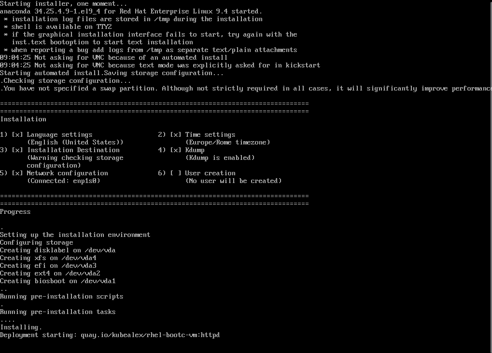

Use Case - RHEL Bootc container as a setup source for Kickstart/Anaconda
In this example, we will expand the image we built in the Apache bootc use case that you can use as a reference for details. This way, we will be able to streamline the creation of VMs based on a frozen, immutable configuration that will take few seconds to be deployed.
Tip
"We will stay on RHEL9 to further show how to perform major upgrades in a following example."
The Containerfile.anaconda in the example:
- Updates packages
- Installs tmux and mkpasswd to create a simple user password
- Creates a bootc-user user in the image
- Adds the wheel group to sudoers
- Installs Apache Server
- Enables the systemd unit for httpd
- Adds a custom index.html
- Customizes the Message of the day
Review Containerfile.anaconda
LABEL org.opencontainers.image.authors="alerossi@redhat.com"
FROM registry.redhat.io/rhel9/rhel-bootc:9.7
RUN dnf -y install tmux mkpasswd
RUN pass=$(mkpasswd --method=SHA-512 --rounds=4096 redhat) && useradd -m -G wheel bootc-user -p $pass
RUN echo "%wheel ALL=(ALL) NOPASSWD: ALL" > /etc/sudoers.d/wheel-sudo
RUN dnf -y install httpd && \
systemctl enable httpd && \
mv /var/www /usr/share/www && \
sed -ie 's,/var/www,/usr/share/www,' /etc/httpd/conf/httpd.conf
RUN echo "Welcome to the bootc-http instance!" > /usr/share/www/html/index.html
RUN echo "This is a RHEL 9.7 VM installed using a bootable container as source!" > /etc/motd.d/10-first-setup.motd
EXPOSE 80
CMD [ "/sbin/init" ]
Pre-requisites
You need a Container registry to push the image and make it available. I suggest creating an account on Quay.io. During the configuration I will be using my username, kubealex, for the demo.
Building the image
From the root folder of the repository, switch to the use case directory:
You can build the image right from the Containerfile using Podman:
Tagging and pushing the image
To tag and push the image you can simply run (replace YOURQUAYUSERNAME with the account name):
Log-in to Quay.io:
And push the image:
You can now browse to https://quay.io/repository/YOURQUAYUSERNAME/rhel-bootc-httpd?tab=settings and ensure that the repository is set to "Public".

Install RHEL 9.7 using the resulting image
Prepare install media and review the kickstart file
RHEL 9.7 ISO images are available on the Red Hat Developer portal and for this use case we will only need the boot image.
Save the image and place it in the use case folder with the name rhel9.iso
The kickstart file is a very simple one:
- Configures text install
- Creates a root user with password redhat
- Sets up basic partitioning
What is relevant is the ostreecontainer directive, that references the container image we just built as a source for the installation!
Review ks.cfg
text
reboot
network --bootproto=dhcp
zerombr
clearpart --all --initlabel --disklabel=gpt
part biosboot --size=1 --fstype=biosboot
part /boot --size=1024 --fstype=ext4 --label=boot
part /boot/efi --size=100 --fstype=efi
part / --size=1000 --fstype=xfs --grow
keyboard us
lang en_US
timezone Europe/Rome
rootpw redhat
ostreecontainer --no-signature-verification --url=quay.io/YOURQUAYUSERNAME/rhel-bootc-vm:httpd
# ostreecontainer --no-signature-verification --url=quay.io/kubealex/rhel-bootc-vm:httpd
Creating the Virtual Machine in KVM
You are now ready to spin-up a Virtual Machine using the downloaded boot image for RHEL 9.7, injecting and using the kickstart to perform an unattended installation.
virt-install --name rhel9-server \
--memory 4096 \
--vcpus 2 \
--disk size=20 \
--network network=default \
--location ./rhel9.iso \
--os-variant rhel9.7 \
--initrd-inject ks.cfg \
--extra-args "inst.ks=file:/ks.cfg"
In a few seconds, the VM will boot and start the installation, grabbing the container image as a source to perform the configuration:

Based on the connection, it can take a while to fetch the container image and complete the setup. Once it is completed, you can log-in with the bootc-user/redhat credentials, and you will see the custom Message Of The Day (MOTD) we added in our Containerfile!